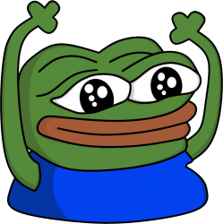
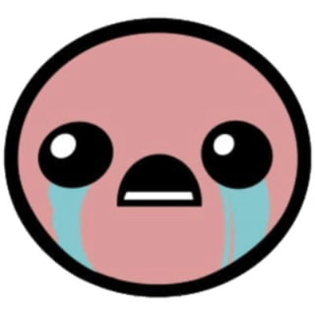

pepehype

biblethump


Twitch is an American video live streaming service operated by Twitch Interactive, a subsidiary of Amazon.[2] Introduced in June 2011 as a spin-off of the general-interest streaming platform Justin.tv, the site primarily focuses on video game live streaming, including broadcasts of esports competitions, in addition to music broadcasts, creative content, and more recently, "in real life" streams. Content on the site can be viewed either live or via video on demand.
The popularity of Twitch eclipsed that of its general-interest counterpart. In October 2013, the website had 45 million unique viewers,[3]:38 and by February 2014, it was considered the fourth largest source of peak Internet traffic in the United States. At the same time, Justin.tv's parent company was re-branded as Twitch Interactive to represent the shift in focus – Justin.tv was shut down in August 2014. That month, the service was acquired by Amazon for US$970 million,[4][5] which later led to the introduction of synergies with the company's subscription service Amazon Prime. Twitch later acquired Curse, an operator of online video gaming communities and introduced means to purchase games through links on streams along with a program allowing streamers to receive commissions on the sales of games that they play.
By 2015, Twitch had more than 1.5 million broadcasters and 100 million viewers per month.[6] As of 2017, Twitch remained the leading live streaming video service for video games in the US, and had an advantage over YouTube Gaming.[7][8] As of May 2018, it had 2.2 million broadcasters monthly and 15 million daily active users, with around a million average concurrent users.[9][10] As of May 2018, Twitch had over 27,000 partner channels.[9][11]
When Justin.tv was launched in 2007 by Justin Kan and Emmett Shear, the site was divided into several content categories. The gaming category grew especially fast, and became the most popular content on the site.[12] In June 2011,[3]:40 the company decided to spin off the gaming content as TwitchTV, inspired by the term twitch gameplay. It launched officially in public beta on June 6, 2011.[13] Since then, Twitch has attracted more than 35 million unique visitors a month.[14][15] Twitch had about 80 employees in June 2013,[16] which increased to 100 by December 2013.[3] The company was headquartered in San Francisco's Financial District.[3]
Twitch has been supported by significant investments of venture capital, with US$15 million in 2012 (on top of US$7 million originally raised for Justin.tv),[17][18] and US$20 million in 2013.[19] Investors during three rounds of fund raising leading up to the end of 2013 included Draper Associates, Bessemer Venture Partners and Thrive Capital.[3]:40 In addition to the influx of venture funding, it was believed in 2013 that the company had become profitable.[3]:40
Especially since the shutdown of its direct competitor Own3d.tv in early 2013, Twitch has become the most popular e-sports streaming service by a large margin, leading some to conclude that the website has a "near monopoly on the market".[20] Competing video services, such as YouTube and Dailymotion, began to increase the prominence of their gaming content to compete, but have had a much smaller impact so far.[21][22] As of mid-2013, there were over 43 million viewers on Twitch monthly, with the average viewer watching an hour and a half a day.[23] As of February 2014, Twitch is the fourth largest source of Internet traffic during peak times in the United States, behind Netflix, Google, and Apple. Twitch makes up 1.8% of total US Internet traffic during peak periods.[24]
In late 2013, particularly due to increasing viewership, Twitch had issues with lag and low frame rates in Europe.[25] Twitch has subsequently added new servers in the region.[26] Also in order to address these problems, Twitch implemented a new video system shown to be more efficient than the previous system. Initially, the new video system was criticised by users because it caused a significant stream delay, interfering with broadcaster-viewer interaction.[27] Twitch staff said that the increased delay was likely temporary and at the time, was an acceptable tradeoff for the decrease in buffering.[28]
On February 10, 2014, Twitch's parent company (Justin.tv, Inc.) was renamed Twitch Interactive, reflecting the increased prominence of the service over Justin.tv as the company's main business.[29] That same month, a stream known as Twitch Plays Pokémon, a crowdsourced attempt to play Pokémon Red using a system translating chat commands into game controls, went viral. By February 17, the channel reached over 6.5 million total views and averaged concurrent viewership between 60 and 70 thousand viewers with at least 10% participating. Vice President of Marketing Matthew DiPietro praised the stream as "one more example of how video games have become a platform for entertainment and creativity that extends WAY beyond the original intent of the game creator. By merging a video game, live video and a participatory experience, the broadcaster has created an entertainment hybrid custom made for the Twitch community. This is a wonderful proof of concept that we hope to see more of in the future."[30][31] Beginning with its 2014 edition, Twitch was made the official live streaming platform of the Electronic Entertainment Expo.[32]
On May 18, 2014, Variety first reported that Google had reached a preliminary deal to acquire Twitch through its YouTube subsidiary for approximately US$1 billion.[33][34][35][36][37]
On August 5, 2014, the original Justin.tv site suddenly ceased operations, citing a need to focus resources entirely on Twitch.[38][39][40] On August 6, 2014, Twitch introduced an updated archive system, with multi-platform access to highlights from past broadcasts by a channel, higher quality video, increased server backups, and a new Video Manager interface for managing past broadcasts and compiling "highlights" from broadcasts that can also be exported to YouTube. Due to technological limitations and resource requirements, the new system contained several regressions; the option to archive complete broadcasts on an indefinite basis ("save forever") was removed, meaning that they can only be retained for a maximum of 14 days, or 60 for partners and Turbo subscribers. While compiled highlights can be archived indefinitely, they were limited to two hours in length.[41][42] In addition, Twitch introduced a copyright fingerprinting system that would mute audio in archived clips if it detected a copyrighted song in the stream.

On August 25, 2014, Amazon acquired Twitch Interactive for US$970 million.[4][5] Sources reported that the rumoured Google deal had fallen through and allowed Amazon to make the bid, with Forbes reporting that Google had backed out of the deal due to potential antitrust concerns surrounding it and its existing ownership of YouTube.[43] The acquisition closed on September 25, 2014.[44] Take-Two Interactive, which owned a 2% stake at the time of the acquisition, made a windfall of $22 million.[45]
Under Amazon, Shear continued as chief executive officer of Twitch Interactive, with Sara Clemens added to the executive team as chief operating officer in January 2018.[46] Shear touted the Amazon Web Services platform as an "attractive" aspect of the deal, and that Amazon had "built relationships with the big players in media", which could be used to the service's advantage—particularly in the realm of content licensing. The purchase of Twitch marked the third recent video gaming–oriented acquisition by Amazon, which had previously acquired the developers Reflexive Entertainment and Double Helix Games.[47]
On December 9, 2014, Twitch announced it had acquired GoodGame Agency, an organisation that owns the esports teams Evil Geniuses and Alliance.[48][49] In March 2015, Twitch reset all user passwords and disabled all connections to external Twitter and YouTube accounts after the service reported that someone had gained "unauthorised access" to the user information of some Twitch users.[50]
In June 2016, Twitch added a new feature known as "Cheering", a special form of emoticon purchased as a microtransaction using an in-site currency known as "Bits". Bits are bought using Amazon Payments, and cheers act as donations to the channel. Users also earn badges within a channel based on how much they have cheered.[51]
On August 16, 2016, Twitch acquired Curse, Inc., an operator of online video gaming communities and gaming-oriented VoIP software.[52] In December 2016, GoodGame Agency was divested by Amazon to their respective members due to conflict of interest concerns.[53] On September 30, 2016, Twitch announced Twitch Prime, a service which provides premium features that are exclusive to users who have an active Amazon Prime subscription. This included advertising-free streaming, monthly offers of free add-on content ("Game Loot"), and game discounts.[54] Games included with the game loot rewards were Apex Legends, Legends of Runeterra, FIFA Ultimate Team, Teamfight Tactics, Mobile Legends: Bang Bang, Doom Eternal, and more.[55]
In December 2016, Twitch announced a semi-automated chat moderation tool (AutoMod), which uses natural language processing and machine learning to set aside potentially unwanted content for human review.[56] In February 2017, Twitch announced the Twitch Game Store, a digital distribution platform that would expose digital purchases of games within the site's browsing interface. When streaming games available on the store, partnered channels could display a referral link to purchase the game—receiving a 5% commission. Users also received a "Twitch Crate" on every purchase, which included Bits and a collection of random chat emotes.[57][58][59]
Twitch and Blizzard Entertainment signed a two-year deal in June 2017 to make Twitch be the exclusive streaming broadcaster of select Blizzard esports championship events, with viewers under Twitch Prime earning special rewards in various Blizzard games.[60] Twitch also reached a deal in 2018 to be the streaming partner of the Overwatch League, with the site also offering an "All-Access Pass" with exclusive content, emotes, and in-game items for Overwatch.[61][62]
In August 2017, Twitch announced it had acquired video indexing platform ClipMine.[63]
On August 20, 2018, Twitch announced that it will no longer offer advertising-free access to the entire service to Amazon Prime subscribers, with this privilege requiring the separate "Twitch Turbo" subscription or an individual channel subscription. This privilege ended for new customers effective September 14, 2018, and for existing customers October 2018.[64]
In October 2018, Twitch announced Amazon Blacksmith, a new extension allowing broadcasters to configure displays of products associated with their streams with Amazon affiliate links.[65] On November 27, 2018, Twitch discontinued the Game Store service, citing that it did not generate as much additional revenue for partners as they hoped, and new revenue opportunities such as Amazon Blacksmith. Users retain access to their purchased games.[66]
Twitch acquired the Internet Games Database (IGDB), a user-driven website similar in functionality to Internet Movie Database (IMDb) to catalog details of video games in September 2019. Twitch plans to use the database service to improve its own internal search features and help users find games they are interested in.[67]
On September 26, 2019, Twitch unveiled a new logo and updated site design. The design is accompanied by a new advertising campaign, "You're already one of us", which will seek to promote the platform's community members.[68]
Twitch began signing exclusivity deals with high-profile streamers in December 2019, starting with DrLupo, TimTheTatman, and Lirik, who had a combined 10.36 million followers at the time.[69] Dr DisRespect signed a multi-year deal in March 2020.[70]
Twitch introduced a Safety Advisory Council in May 2020, made up from streamers, academics, and activities, with a goal to develop guidelines for moderation, work-life balance, and safeguarding the interests of marginalized communities for the platform.[71]
In August of 2020, Amazon announced Twitch Prime is being rebranded as Prime Gaming. [72]

Twitch is designed to be a platform for content, including esports tournaments, personal streams of individual players, and gaming-related talk shows.[73] A number of channels do live speedrunning.[74] The Twitch homepage currently displays games based on viewership. The typical viewer is male and aged between 18 and 34 years of age, although the site has also made attempts at pursuing other demographics, including women.[23][75] As of June 2018 some of the most popular games streamed on Twitch are Fortnite, League of Legends, Dota 2, PlayerUnknown's Battlegrounds, Hearthstone, Overwatch and Counter-Strike: Global Offensive with a combined total of over 356 million hours watched.[76] Streamer Ninja had been among Twitch's top personalities, with over 14 million followers. In August 2019, however, Ninja announced that he would move exclusively to a Microsoft-owned competitor, Mixer.[77][78][79]
Twitch has also made expansions into non-gaming content; such as in July 2013, the site streamed a performance of 'Fester's Feast' from San Diego Comic-Con, and on July 30, 2014, electronic dance music act Steve Aoki broadcast a live performance from a nightclub in Ibiza.[80][81][82][83] In January 2015, Twitch introduced an official category for music streams, such as radio shows and music production activities, and in March 2015, announced that it would become the new official live streaming partner of the Ultra Music Festival, an electronic music festival in Miami.[84][85]
On October 28, 2015, Twitch launched a second non-gaming category, "Creative", which is intended for streams showcasing the creation of artistic and creative works. To promote the launch, the service also streamed an eight-day marathon of Bob Ross' The Joy of Painting.[86] In July 2016, Twitch launched "Social eating" as a beta; it was inspired by the Korean phenomenon of Muk-bang and Korean players having engaged in the practice as intermissions on their gaming streams.[87]
In March 2017, Twitch added an "IRL" category, which is designed for content within Twitch guidelines that does not fall within any of the other established categories on the site (such as lifelogs).[88]
In May 2017, Twitch did a livestream marathon of all the episodes of the PBS Kids show, Mister Rogers' Neighborhood. They repeated the marathon on March 20 of the following year to honor what would have been Fred Rogers' 90th birthday.[89]
Broadcasters on Twitch often host streams promoting and raising money towards charity. By 2013, the website has hosted events which, in total, raised over US$8 million in donations for charitable causes, such as Extra Life 2013.[91] As of 2017 the website has raised over US$75 million in donations for charitable causes.[92]
In December 2017, the National Basketball Association announced that it would stream NBA G League games on Twitch starting on December 15; the broadcasts also include interactive statistics overlays, as well as additional streams of the games with commentary by Twitch personalities.[93] In April 2018, it was announced that Twitch would carry eleven National Football League Thursday Night Football games, as part of the league's renewed streaming deal with Amazon Prime Video. During the 2017 season, these streams were exclusive to Amazon Prime subscribers.[94]
In January 2019, professional wrestling promotion Impact Wrestling announced that it would stream its weekly show Impact! on Twitch, in simulcast with the television airing on the U.S. cable network Pursuit Channel (co-owned with the promotion's parent company Anthem Sports & Entertainment).[95]
On September 5, 2019, the National Women's Hockey League announced a three-year broadcast rights deal with Twitch, covering all games and league events. The deal also contained an agreement with the NWHL Players' Association for revenue sharing with players, and marked the first time that the NWHL had ever received a rights fee.[96] The National Women's Soccer League announced a three-year deal in March 2020 for Twitch to stream 24 matches per-season in the United States and Canada, collaborate on original content, and serve as the rightsholder for all matches outside of the United States and Canada.[97][98]
On June 20, 2020, as an extension of Amazon Prime's local rights to the league, a plan to air all of the remaining matches of the 2019–20 season (for the resumption of play due to the COVID-19 pandemic), and a plan for some of these matches to be carried free-to-air, it was announced that Twitch would stream a package of four Premier League soccer matches within the United Kingdom.[99][100]
On July 16, 2020, U.S. radio broadcaster Entercom announced a partnership to stream video simulcasts of programs from some of their major-market sports talk stations.[101] On July 22, 2020, Twitch officially launched a Sports category, primarily playing host to content streamed by sports leagues and teams on the platform.[102]
Twitch features a large number of emoticons called "emotes". There are emotes free for all users, emotes for Turbo users, emotes for Twitch Prime users, and emotes for users who are subscribed to Twitch partners or affiliates.[103] As of October 2015, Kappa was the most used emote on Twitch.[104][105] Twitch partnered broadcasters unlock more "emote slots" as they gain more subscribers up to a maximum of 50 emotes per channel.[106]
On August 6, 2014, Twitch announced that all on-demand videos on Twitch became subject to acoustic fingerprinting using software provided by content protection company Audible Magic; if copyrighted music (particularly, songs played by users from outside of the game they are playing) is detected, the 30-minute portion of the video which contains the music will be muted. Live broadcasts were not subject to these filters.[107][108] A system was available for those who believed they were inappropriately affected and had rights to the music they used to challenge the filtering.[109] Twitch offered selection of royalty-free music library for streamers to use, which is expanded upon later in January 2015.[84] The audio filtering system, along with the lack of communication surrounding the changes in general, proved to be controversial among users. In a Reddit AMA, co-founder Emmett Shear admitted that his staff had "screwed up" and should have provided advance warning of the changes, and promised that Twitch had "absolutely no intention" of implementing audio filtering on live broadcasts.[110]
In June 2020, Twitch received a large wave of DMCA takedown notices aimed at year-old VODs and "clips" (short segments of VODs separated out by viewers) that contain copyrighted music from 2017-19. Twitch complied with the takedowns and also issued a number of copyright strikes against viewers. Concerned streamers were notified that they should remove all VODs and clips if not certain they did not contain copyrighted material. This provoked major backlash, both at the loss of prior content but also based on viability concerns due to an inability to review or even rapidly delete content. There were also complaints based that strikes were being issued on viewer-created clips, even where the streamer-created content was deleted.[111][112][113]
Mature content Twitch users are not allowed to stream any game that is rated "Adults Only" (AO) in the United States by the Entertainment Software Rating Board (ESRB), regardless of its rating in any other geographical region, and any game that contains "overtly sexual content" or "gratuitous violence", or content which violates the terms of use of third-party services.[114][115]
Twitch has also explicitly banned specific games from streaming, regardless of rating; this includes games such as BMX XXX, eroge visual novel games (such as Dramatical Murder), HuniePop, Rinse and Repeat, Second Life, and Yandere Simulator.[115][116][117][118] The banning of Yandere Simulator was criticized by YandereDev, the developer of the game. He believed that the game was being arbitrarily singled out with no explanation, as Twitch has not banned other games with similarly excessive sexual or violent content such as Mortal Kombat X, Grand Theft Auto, or The Witcher 3.[117][119]
Twitch took temporary action in May 2019 after channels related to the video game Artifact began to be used for inappropriate content. Artifact, a major game by Valve, had lost most of its audience in just months from its release, and by late May 2019, several popular livestreamers commented that the total viewership for Artifact streams had dropped to near zero. In the days that followed, several streams started to make streams purporting to be Artifact gameplay but was trolling or other off-topic content. Initially these new streams were playing with the viewers or were jokes, such as showing animal videos or League of Legends matches. After a few days, other Artifact channel streams appeared containing content that was against the terms of Twitch's use policy, including full copyrighted movies, pornography, Nazi propaganda, and at least one stream that showed the entirety of the shooter's video from the Christchurch mosque shootings. The titles of such streams were usually presented to imply they were showing other content while waiting in queue for Artifact matches as to appear legitimate. As word of these streams in the Artifact section grew, Twitch took action, deleting the account that streamed the Christchurch shooting.[120] Twitch then took steps to temporarily ban new accounts from streaming until they can resolve the issue.[121] By June 2019, Twitch started taking legal actions against one hundred "John Doe" streamers in a California court, accusing them of trademark infringement, breach of contract, fraud, and unlawful use of the service that was harming and scaring away users of the service.[122][123]
In February 2018, Twitch updated its acceptable content policies to deem that any channel directing hate speech or harassment to be suspended from its platform.[124]
Also in June 2020, a number of women stepped forward with accusations towards several streamers on Twitch and other services related to sexual misconduct and harassment claims.[125] Twitch stated it would review all reported incidents and comply with law enforcement in any investigative efforts. However, several popular streamers on Twitch's service believed that the platform could do more to evaluate the accused individuals, prevent incidents, and protect others in the future, and used June 24, 2020 as a Twitch blackout day, not streaming any content through Twitch to show their support.[126] By the evening of June 24, 2020, Twitch had placed several bans on the accounts of those accused after completing their investigation, and stated in a blog post they would be forwarding additional details to law enforcement.[127]
Twitch temporarily suspended an account belonging to President Donald Trump's campaign on June 29, 2020 after the channel used it to stream some of Trump's prior campaign speeches, which included a 2016 campaign rally in which he called Mexicans rapists and criminals. Twitch stated that "hateful conduct is not allowed" as reason for the suspension.[128]
As of September 20, 2018, the Twitch website is blocked and the app is blocked from the Apple App Store in China.[129]

In July 2011, Twitch launched its Partner Program,[130] which reached over 11,000 members by August 2015.[131]
Similar to the Partner Program of other video sites like YouTube, the Partner Program allows popular content producers to share in the advertisement revenue generated from their streams. Additionally, Twitch users can subscribe to partnered streamers' channels for US$4.99 a month, often granting the user access to unique emoticons, live chat privileges, and other various perks. Twitch retains US$2.49 of every US$4.99 channel subscription, with the remaining US$2.50 going directly to the partnered streamer.[132] Although exceptions were made, Twitch previously required that prospective partners have an "average concurrent viewership of 500+", as well as a consistent streaming schedule of at least three days a week.[133] However, since the launch of the 'Achievements' feature, there is a clearer "Path to Partnership" with trackable goals for concurrent viewership, duration and frequency of streams.[134][135]
In April 2017, Twitch launched its "Affiliate Program" that allows smaller channels to generate revenue as well, also announcing that it would allow channels access to multi-priced subscription tiers.[136][137] The participants of this program get some but not all of the benefits of the Twitch Partners. Streamers can make profit from cheering with Bits which are purchasable from Twitch directly.[138] Affiliates are also able to access the Twitch Subscriptions feature, with all the same functionality that Partners have access to, with a maximum of five subscriber emotes.[139] In September 2019, the service announced that Affiliates would now receive a share of ad revenue.[140]
Advertising on the site has been handled by a number of partners. In 2011, Twitch had an exclusive deal with Future US.[141] On April 17, 2012, Twitch announced a deal to give CBS Interactive the rights to exclusively sell advertising, promotions and sponsorships for the community.[75][142] On June 5, 2013, Twitch announced the formation of the Twitch Media Group, a new in-house advertisement sales team which has taken over CBS Interactive's role of selling advertisements.[15]
| Twitch Categories | Popularity(Average Viewers) |
|---|---|
| Just Chatting | 10.5% |
| League of Legends | 8.9% |
| Fortnite | 6.6% |
| Fall Guys | 5.3% |
| COD: Modern Warfare | 4.9% |
| GTA V | 4.9% |
| Among Us | 3.9% |
| CSGO | 3.3% |
| Dota 2 | 2.8% |
{kind=link}